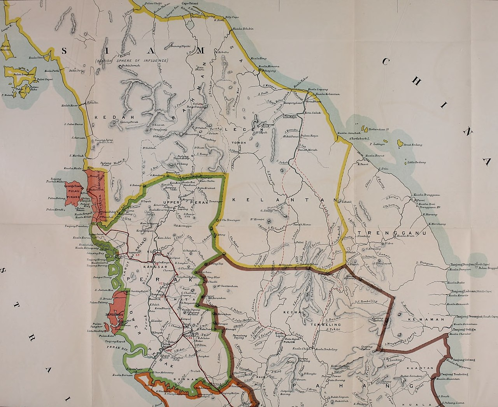
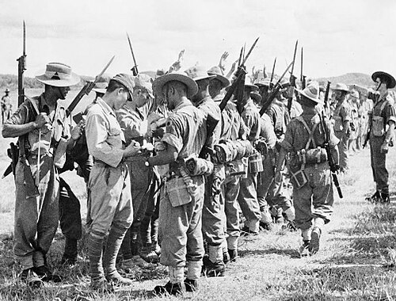

Early History and Siamese Influence

Terengganu was historically an independent Malay sultanate located on the east coast of the Malay Peninsula.
Long before European intervention, the state maintained strong maritime trade connections with regional powers
including China, the Middle East, and neighbouring Southeast Asian kingdoms.
Islam played a major role in shaping the political and cultural identity of the state,
with the Sultan serving as both a political and religious authority.
During the eighteenth and nineteenth centuries, Terengganu developed a complex relationship with Siam
(modern-day Thailand). While the state maintained internal autonomy, it acknowledged Siamese influence
through tribute and diplomatic relations. This arrangement allowed Terengganu to remain largely self-governing
while still operating within a broader regional power structure.
However, the political status of Terengganu changed significantly in the early twentieth century following the
Anglo-Siamese Treaty of 1909. Under this agreement, Siam transferred control of several northern Malay states
to the British. This marked the beginning of stronger British involvement in Terengganu’s administration
and signaled a major shift in the region’s political landscape.
British Intervention and Administration

Following the 1909 treaty, British influence gradually increased in Terengganu.
Although the Sultan remained the official ruler, British advisors were introduced
to oversee administrative and financial matters.
This system allowed the British colonial government to exercise significant influence
while maintaining the appearance of local sovereignty.
British policies focused on modernizing administration, expanding trade,
and improving infrastructure within the state. New taxation systems were introduced,
and economic activity became more closely tied to the wider colonial economy of British Malaya.
While these developments brought certain administrative reforms,
they also reduced the independence of the traditional ruling structure.
Despite British influence, Terengganu maintained a stronger degree of autonomy compared
to some other Malay states, as local leaders often resisted deeper colonial control.
This tension between colonial administration and local authority became a defining
feature of the state’s political development during the early twentieth century.
Japanese Occupation (1941–1945)

The outbreak of World War II dramatically altered the political situation in Malaya.
In December 1941, Japanese forces invaded the Malay Peninsula and quickly defeated
British defenses. Terengganu, like much of Malaya, came under Japanese military occupation.
The occupation brought significant hardship to the local population.
Economic resources were redirected toward the Japanese war effort,
food shortages became common, and strict military rule was imposed.
Many residents experienced forced labour and severe restrictions on daily life.
Although this period was marked by suffering, it also weakened the authority of
European colonial powers in the region. The fall of British rule during the war
helped inspire stronger nationalist movements across Malaya in the years that followed.
The Path Toward Independence
After the end of World War II in 1945, the British returned to re-establish
administration in Malaya. However, the political landscape had changed dramatically.
Growing nationalist movements demanded greater self-governance and the end of colonial rule.
Over the next decade, negotiations between British authorities and local political
leaders led to the creation of the Federation of Malaya. In 1957, Malaya achieved
independence, marking the end of formal colonial rule in the region.
As part of the Federation, Terengganu entered a new phase of development within an
independent nation. The legacy of colonisation, however, continued to shape the state’s
administrative systems, political institutions, and economic structures.
Understanding this historical experience helps explain the development of modern Terengganu
and its role within Malaysia today.